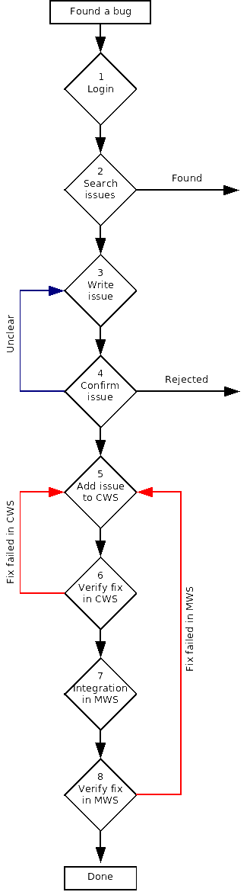

Issue Handling - A Brief Guide
This page gives you a brief introduction to how issues are handled
winthin the OpenOffice.org Quality Assurance. Basically it describes
an issue's lifecycle and provides direct links to useful documentation.
| 
|
- It is recommended that you start by
logging in
to
IssueTracker.
If you want to learn about the benefits of IssueTracker please read
this abstract
- Please search the IssueTracker database to make sure that your issue does not exist yet.
Follow this link to get tips about searching IssueTracker [link]
or jump directly to the
search form
If your issue exists you might want to bookmark it or set yourself on CC
- You did not find your issue in the database?
Good, go ahead and write a new one using the
submit form.
If you are unfamiliar with writing good Bugreports we recommend that you read
this document.
Following these rules really makes life easier for all.
If you want to dig a little deeper you might want to read these detailed
bug writing guidelines
as well.
- The issue needs to be confirmed
When you are new to OpenOffice.org you don't have the permissin to confirm
your issues yourself. So somebody with the required permissions will take over at this point.
The OOo volunteer will try to reproduce your problem and - in case
of failure - get back to you and ask some more questions. If reproduction succeeds
the issue gets a target and will be handed over to development for fixing. If the
issue can not be reproduced it is rejected.
- The issue gets fixed
Your issue gets fixed on a CWS [link to explanation]
(Childworkspace) by a developer.
- The issue needs to be verified on the CWS
Your issue will now be verified, meaning that somebody (which could be you as well)
takes a look at it by installing a developer build from the CWS. If the fix is not good
(failed completely or insufficient) it goes back to development
- The fix is good and gets integrated into the MWS
The issue now has the status fixed/verified and gets integrated into the main
development line and you can download it with the next developer snapshot.
- Verify the integrated fix
Again somebody verifies that the
fix did not by accident get lost or corrupted. If all went well the status is changed to
closed/fixed. On any problem the task gets back to development and the cycle starts anew.
|